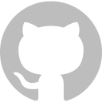

about me

I'm a senior pursuing a B.S. in engineering with a concentration in computing at Olin College of Engineering in Needham, MA. I'm from Tacoma, WA, and I have also lived and worked in Portland, OR and Newark, NJ. My main programming language is Java, but I've also recently worked on projects in C and Python. I enjoy designing websites, and I've made several for projects, friends, family, and faculty. This website was built from scratch using HTML/CSS and a hint of JavaScript. I've built other sites using React and JavaScript, as well as with microframeworks like Flask.
At work I'm a team player who is always enthusiastic and positive, a tenacious worker who can't give up on a problem before she has truly tried everything, and a lifelong student who is always learning and improving. In my free time I'm an avid reader, a musician and music appreciator, a short-distance runner, a graphic designer, and a mixed media artist.
Currently, I'm looking for a post-graduation job at a software company. I want to work for people I can learn from and with whom I can do things that are fun, valuable, fulfilling, and challenging. Feel free to reach out to me at emilyeyeh@gmail.com about your particular business interests or if you have any questions.
Thanks for visiting my website!
Emily Yeh